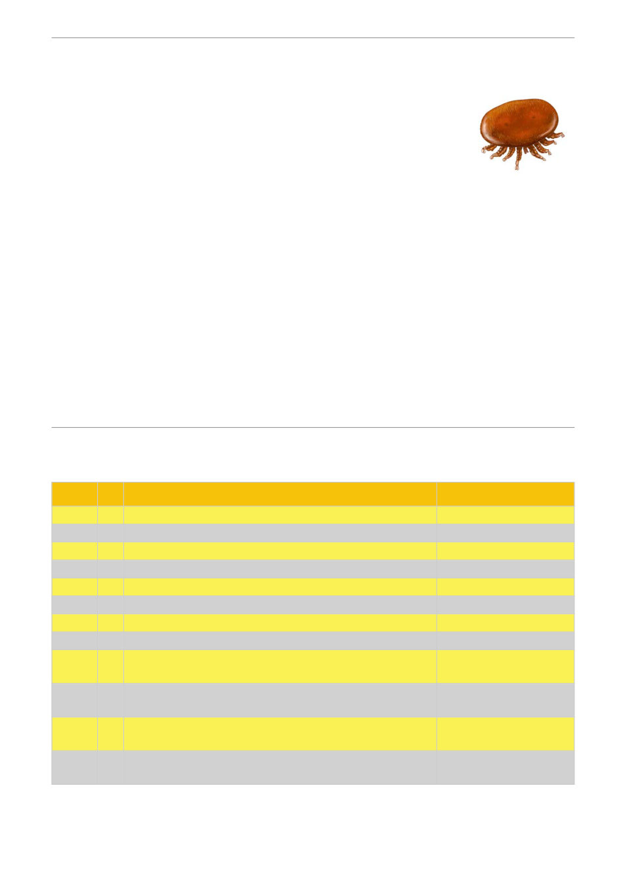

Take part in 'GBC Varroa Watch'
. . our online recording facility.
Have any of your hives died?
If you have experienced any recent hive loss, please also record these in the
GBC Varroa Watch using the [Record colony/hive loss] button even if the
cause of the loss may not be Varroa related. Recording your losses will help
the club build a wider picture of overall problem areas in the region so we can apply resources to
assist.
Once Spring arrives . .
The shortest day has been and gone so it will not be too long before we're doing our spring
inspections.
Please make sure you record your alcohol wash tests in our online GBC Varroa Watch system. Log
in to the members area and click on the [GBC Varroa Watch] to record your results.
Members will be able to see the collected amalgamated results so you can see the status of areas
where you might have hives. The collected information will only be used by the committee for the
purposes of assisting members plan and deal with Varroa infestations in our area.
(Please note - you still need to enter your wash results at BeeMax to satisfy AgVic requirements)
Monthly Meeting Plan
Month
Year
Meeting Topic
Biosecurity Topic
January
2027 Club picnic
Nil
February
2027 TBA
Barrier System
March
2027 Guest Speaker Phia Crocker - The Bee Drover
AFB-EFB
April
2027 TBA
Winter shut down
May
2027 Guest Speaker Ben Moore, Honey tasting & Judging Night
IPM
June
2027 TBA
Chalkbrood
July
2027 TBA
Nosema
August
2027 AGM
Spring opening
September 2026 Guest Speaker Dr Andrew Wootten
Wax Moth - Varroa Module 8
Organic chemicals
October
2026 Bernie Franke - "A small sideline operation in southern Victoria: developing and
evolving our varroa plan" Launch of The Geelong Project
Disease prevention - Varroa
Module 9 Hyperthermia
November 2026 Guest Speaker Michael Johnson from The Basin Backyard ***
TBA - Varroa Module 10 Breeding
for resistance
December 2026 TBA
Varroa Module 11 Surviving the
wave
*** NOTE the November meeting will NOT be at our normal location (due to the Victorian election
using the hall), but will be at the Geelong West Community Hall, 89 Autumn Street Geelong West